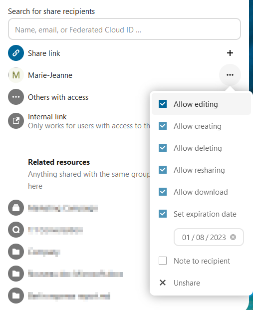
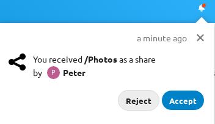
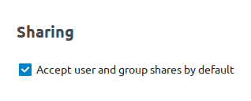
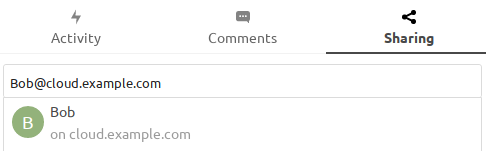
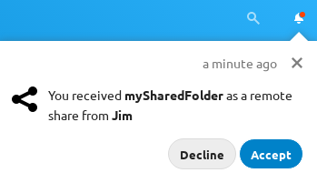

Nextcloud-brugere kan dele filer og mapper. Der kan deles med:
offentlige links
brugere
grupper
cirkler
samtaler i Talk
brugere eller grupper på fødererede Nextcloud-servere
Bemærk
Nogle muligheder er måske ikke tilgængelige, afhængigt af hvordan administratoren har sat serveren op. Se dokumentationen for administratorer for detaljer.
Når du deler med brugere, grupper, teams eller deltagere i en samtale i Talk, kan du justere rettighederne til filerne eller mappens indhold:

Som modtager kan du vælge, om du automatisk vil acceptere alle delinger, du modtager, og få dem lagt i din rodmappe, eller om du vil spørges hver gang, om du vil acceptere eller afvise delingen.

Du ændrer indstillingen under Indstillinger > Personligt > Deling:

Advarsel
Hvis ejeren omdøber en delt fil eller mappe, ændres navnet ikke hos modtageren. Det er nødvendigt for at undgå, at eksisterende filer eller mapper hos modtageren bliver overskrevet.
Med fødereret deling kan du tilknytte delinger fra andre Nextcloud-servere og på den måde skabe din egen sky af Nextcloud-servere. Du kan oprette direkte delingslinks med brugere på andre Nextcloud-servere.
Fødereret deling er slået til som standard. Sådan opretter du en ny deling med andre Nextcloud- eller ownCloud-servere:
Gå til siden Filer, og klik på ikonet Del ved den fil eller mappe, du vil dele. Indtast i sidepanelet brugernavnet og URL’en for den eksterne bruger på formen <username>@<nc-server-url>. I eksemplet her er det bob@cloud.example.com:

Modtageren får en notifikation i sin Nextcloud og kan acceptere eller afvise delingen:

Tilføjelse af en offentlig deling til din Nextcloud
Nextcloud public link share pages offer an option to add that file or folder as a federated share
into your own Nextcloud instance.
Enter your <username>@<nc-server-url> as shown for outbound shares above: